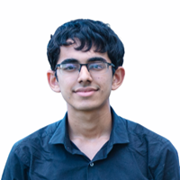

Contact
- +91 7249087128
- adityahegde712@fart.com
- H-No: 3/5726, Behind Golden
- Showers Estate, Gogol, Margao, Goa
- https://www.linkedin.com/in/aditya-hegde-09650a221/
- https://github.com/AdityaHegde712
Specialization
- B.Tech Computer Science Engineering, Woxsen
- University, Current CGPA: 3.73
Languages
- English
- Hindi
- Konkani
- Kannada
- French
Technical Skills
- Exploratory Data Analysis
- Machine Learning
- Deep Learning
- Data Visualization
- Web Development
- Python App Development (PyQT5)
Soft Skills
- Leadership
- Teamwork
- Active Communication
- Time Management
- Consistency
- Perseverance
Hobbies
- Reading
- Cycling
- Table Tennis
- Cooking
- PC Building
Aditya Hegde
B.Tech Computer Science Engineering
Synopsis
Aditya, an ambitious undergraduate at Woxsen University, pursues a Bachelor's in
Computer Science Engineering. Proficient in web development (HTML, CSS,
JavaScript, MySQL, Flask), Machine Learning and Deep Learning (Tensorflow,
Pytorch, Pandas, Numpy, Matplotlib, etc). Skilled in automation scripts, Python
applications (PyQt5, Tkinter), and competitive coding. Strong team player with
effective communication and adaptability. Seeking internships to further apply and
develop expertise in machine learning and web development.
Academics
Woxsen University | Hyderabad
2021 - 2025 | B.Tech CSE
Mushtifund Aryaans Higher Secondary School | Goa
2019 - 2021 | Higher-Secondary Education
Manovikas English Medium School | Goa
2005 - 2018 | Primary, Middle, and High School
2021 - 2025 | B.Tech CSE
Mushtifund Aryaans Higher Secondary School | Goa
2019 - 2021 | Higher-Secondary Education
Manovikas English Medium School | Goa
2005 - 2018 | Primary, Middle, and High School
Work Experience
August 2022 - Present
COE for Cybersecurity and Quantum Computing | Woxsen University
Resident Project Coordinator- Project Management
- Team Coordination
- Resource Allocation
- Documentation
- Event Organization
- Meeting Summaries
Summer Internship
May 2023 - July 2023
VSSS Ltd | Yellapur, Karnataka
Programmer (Python App Developer) | On-site correspondent - Supervisor Coordination: This includes communications between the team and the supervisor, surveys of the area, interviews with the workers, problem identification, feature discussions for the software they desired, negotiations on its functionalities, and deployment tasks.
- Front End Programming: This includes coordination with the team, building documentation, learning the libraries needed, implementations, debugging, and revision of the code.
Certification
- 04-2023 | Data Analysis with Python
- 04-2023 | Data Visualization with Python
- 04-2023 | AI for Everyone
- 03-2023 | What is Data Science?
- 04-2023 | Python Programming Essentials
- 03-2023 | Fundamentals of Network Communication
Projects
- A working digitized Labourer Management System, with database integration, records and finances automation, and powerful retrieval.
- A Web interface for a Machine-Learning based Tool Defect Detection application.
- A Web interface for a Machine-Learning based Bottle Damage application.
- A multi-modal cascaded Dementia Detection and Classification Model using MRI analysis and CSV report analysis for accurate predictions.
- A Near-Earth-Object Detection and Classification Model using open data from various space agencies.
- An implementation of a Latin Square Image Encryption based on a paper published in 2023.
Co-Curricular Activities
- Former member at the Center for Science, Technology, and Innovation (CSTI), Manovikas (2014 - 2018)
- School-team table-tennis player, Manovikas (2014-16).
- Haemophilia fundraiser (2014)
- Primary Organizer of a Virtual Annual Day program, 2020